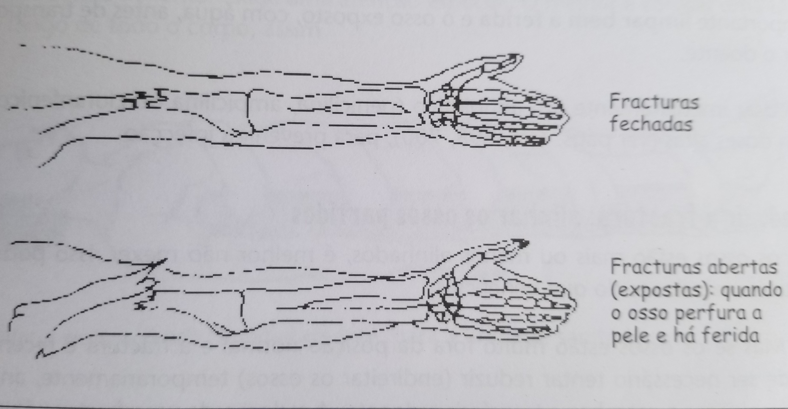

Deve-se suspeitar de fractura, depois duma queda ou acidente, quando o doente não consegue realizar movimente normais do membro. O doente sente uma dor intensa no local, que aumenta quando tenta fazer movimentos.
Há 2 tipos de fractura:
Quando se suspeita de uma fractura:
• Movimentar o mínimo possível o membro ferido
• Verificar se a fractura é aberta ou fechada. Se a fractura é aberta, tratar primeiro a ferida
• Verificar se o doente tem mais fracturas
• Imobilizar a fractura na posição mais cómoda para o doente
• Transferir o doente para uma unidade sanitária com mais recursos
Quando um osso está partido, o mais importante é mantê-lo numa posição fixa (imobilização). Isso facilita a consolidação (cura) do osso e evita incapacidade.
Como transportar uma pessoa com fractura
Antes de tentar movimentar ou transportar uma pessoa com uma fractura, é preciso tentar fazer uma imobilização provisória. Isto pode ser feito com talas, com uma tira de casca de árvore, ou com um papelão grosso. Antes de aplicar a tela, a zona da fractura deve ser bem almofadada com algodão. A imobilização deve começar acima da articulação mais próxima e ir até abaixo dela.
CUIDAO: Mesmo que a tala não esteja muito apertada quando é colocada, é preciso ter em conta que o local da fractura pode inchar mais tarde. Se a pessoa se queixa que a tala está muito apertada, ou se os dedos das mãos ou dos pés ficarem inchados, frios, ou azulados, deve-se retirar a tala imediatamente e colocar uma nova, mais folgada.
Mais tarde pode-se fazer a imobilização definitiva (p. ex., com gesso) na unidade sanitária mais próxima.
Fracturas expostas: ossos partidos que perfuram a pele
No caso de uma fractura exposta o perigo de infecção é muito grande. É muito importante limpar bem a ferida e o osso exposto, com àgua, antes de transportr o doente.
Usar imediatamente um antibiótico (penicilina, ampicilina ou cloranfenicol), em doses altas, para prevenir a infecção.
Reduzir a fractura: alinhar os ossos partidos
Se os ossos estão mais ou menos alinhados, é melhor não mexer. Isso poderá causar mais danos do que benefícios.
Mas se os ossos estão muito fora da posição normal e a fractura é recente, pode ser necessário tentar reduzir (endireitar os ossos) temporariamente, antes de imobilizar o membro e transferir o doente. A redução de uma fractura é uma manobra dolorosa, por isso, deve-se dar analgésicos e diazepam oral ou injectável para aliviar a dor e relaxar os músculos.